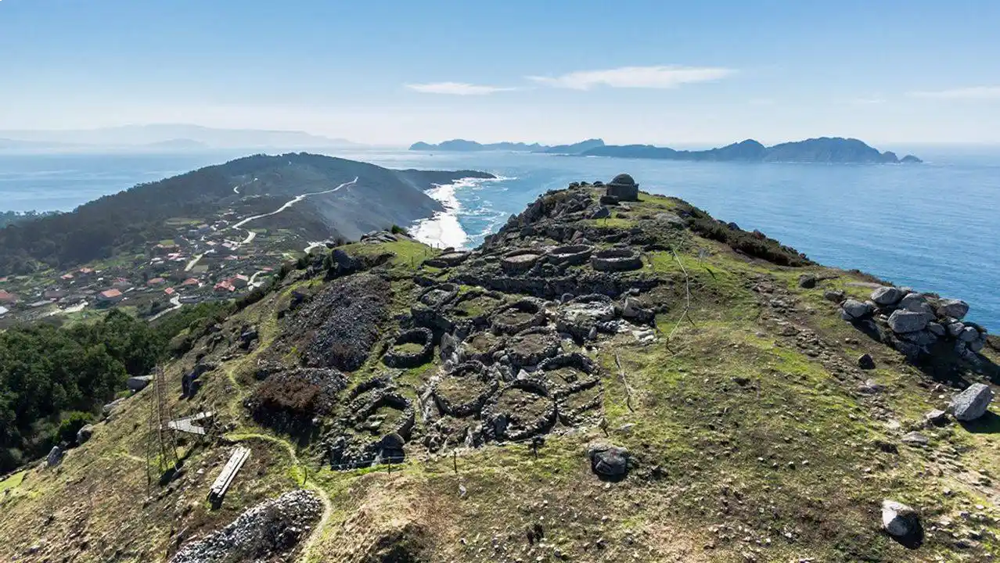
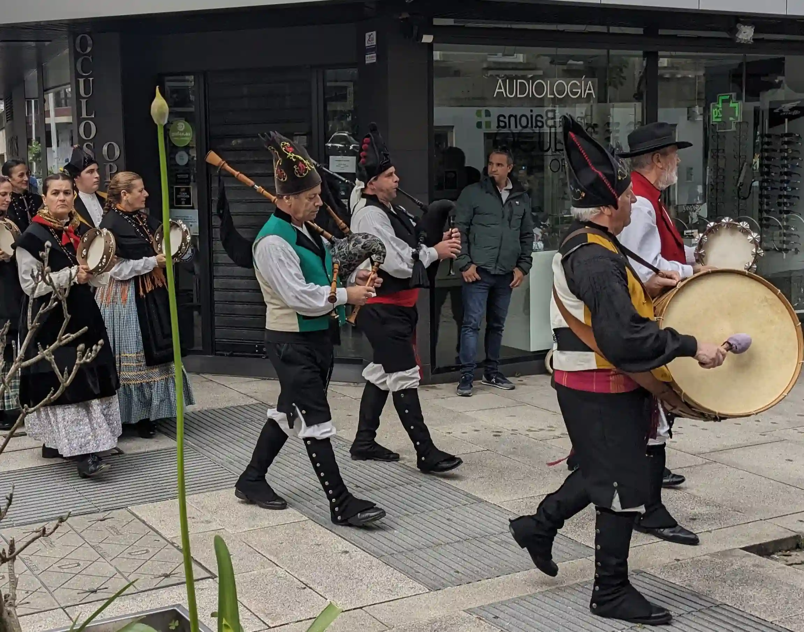

It is a little-known fact that the region of Galicia in Spain is considered one of the seven Celtic Nations, a group that also includes Ireland, Wales, Scotland, Cornwall, the Isle of Man, and Brittany. We at Spain Sailing invite you to discover Galicia's unique cultural heritage and its historical connections to the broader Celtic world.
The Gallaeci tribe, who lent their name to modern Galicia, were part of the widespread Celtic migrations that swept across Europe during the Iron Age, leaving their mark on the continent's languages, traditions, and landscapes.

While Galicia may not exhibit the same overt displays of Celtic identity as some of its sister nations, its Celtic roots run deep and are evident in numerous aspects of its culture. The verdant green landscapes, the presence of ancient hill forts, and a traditional economy rooted in agriculture and fishing all echo characteristics found in other Celtic regions. A closer examination reveals compelling evidence of Galicia's Celtic origins, inviting travellers to discover the hidden connections that bind this region to the wider Celtic world. For those seeking a unique travel experience we offer travellers the opportunity to explore the Galician coast and immerse themselves in this fascinating culture, allowing them to witness the landscapes and coastal communities that have shaped Galicia's Celtic heritage.
Although the Celtic language itself is now largely lost, with Galician predominantly a blend of Castilian Spanish and Portuguese, linguistic traces of its Celtic past remain. Scholarly analysis of the Galician language reveals that certain words, such as 'cervo' (deer), 'carballo' (oak), and 'teixo' (yew), share striking similarities with their counterparts in ancient and modern Celtic languages. These cognates, like the Irish 'fia', 'caorthann', and 'iúr', and the Welsh 'carw', 'derwen', and 'ywen', offer a tangible link to Galicia's Celtic linguistic heritage. Furthermore, place names scattered throughout Galicia, including Cedeira, Tui, and Láncara, exhibit linguistic patterns consistent with Celtic naming conventions, providing further evidence of the historical influence of Celtic languages on the region.
The enduring legacy of Celtic culture can also be seen in the ancient fortified hill settlements, known locally as 'castros', that dot the Galician landscape. These impressive structures, reminiscent of the hill forts of Ireland, such as the Hill of Tara, and the brochs of Scotland, like the Broch of Gurness, stand as silent witnesses to Galicia's Celtic past. One of the most remarkable of these Galician castros is located at O Facho de Donón, a site easily accessible by a pleasant walk from one of Spain Sailing's regular anchorages at Barra Beach.
Galicia's vibrant musical culture provides perhaps the most readily apparent connection to its Celtic heritage. The 'gaita galega', the Galician bagpipe, bears a striking resemblance to the Irish 'uilleann pipes' and the Breton 'biniou', highlighting the shared musical traditions of the Celtic world. Galician music also shares thematic elements with the folk music of other Celtic regions. Traditional Galician dances like the 'Muiñeira' often celebrate nature, communal life, and storytelling, echoing the themes found in Irish reels and Scottish strathspeys. For instance, the Galician tune 'A Rianxeira', with its focus on maritime life, captures the essence of Galicia's seafaring culture, much like 'The Skye Boat Song' evokes the maritime history of Scotland.
The spiritual heritage of Galicia is deeply intertwined with the natural world, a characteristic it shares with other Celtic regions. The Galician landscape is scattered with ancient stone monuments, sacred wells, and rock carvings that parallel those found at sites like Newgrange in Ireland and the Callanish Stones in Scotland. Galicia's dolmens, such as the Dolmen de Axeitos, are reminiscent of the megalithic structures that served as important centers of Celtic spiritual practice.
Galician mythology also reflects themes and motifs found in the folklore of other Celtic lands. The 'Santa Compaña', a spectral procession of the dead in Galician tradition, echoes the Wild Hunt of Breton and Welsh mythology. Legends of enchanted forests, sacred trees, and journeys to otherworlds resonate with stories from Irish mythology, such as the voyages of Bran mac Febail.
In recent decades, Galicia has actively embraced its Celtic identity, recognising it as a vital part of its cultural revival. This renewed interest in Celtic heritage has led to a flourishing of cultural exchange and a deeper appreciation of Galicia's unique place within the Celtic family. Galicia's rich cultural tapestry is inextricably linked to the traditions of the Celtic world. From shared architectural styles and linguistic connections to a deep appreciation for music, dance, and mythology, the ties between Galicia and other Celtic regions are both profound and enduring. Through festivals, collaborative projects, and ongoing cultural revival movements, Galicia continues to celebrate its Celtic heritage, proudly affirming its place among the family of Celtic nations.